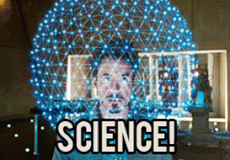

Let me tell you a little about why I am now completing the Galvanize program after a fifteen-year hiatus from technology. My undergraduate work was in Computer Science, but my first job after graduating left me with more than a jaded view on the industry. I went back to school and earned my master's degree in a program called College Student Personnel, otherwise known as Higher Education Administration.
I worked in education, mainly at colleges and universities, helping students develop their leadership skills and realize their potential through co-curricular activities and specialized trainings. After a while, this grew stale (for a number of reasons) and I left to pursue other interests. I have taken to calling this time my "gap year." It was pretty awesome, but mainly because I worked for United Airlines and was able to travel the world with much more ease.
I've always remained interested in technology, staying up-to-date with new gadgets and current on popular trends. I'm hopeful that after Galvanize I will find work with a Denver-based startup company that focuses on some kind of integration with new technologies. I mean, who doesn't want to be a real-life Tony Stark? :)
